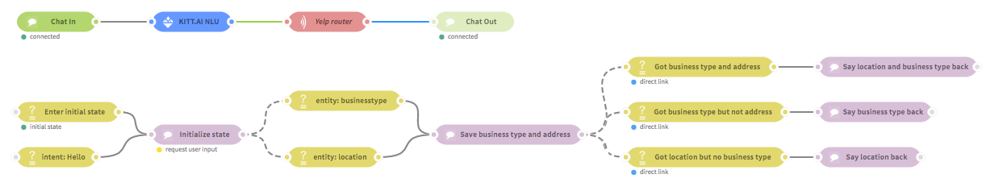
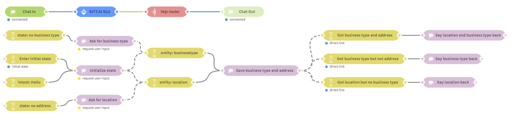
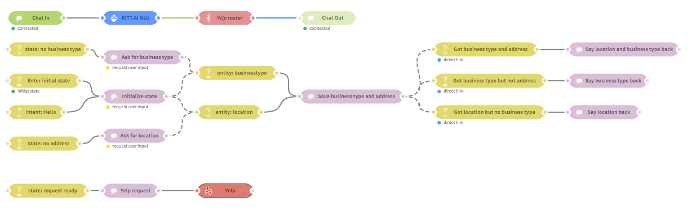
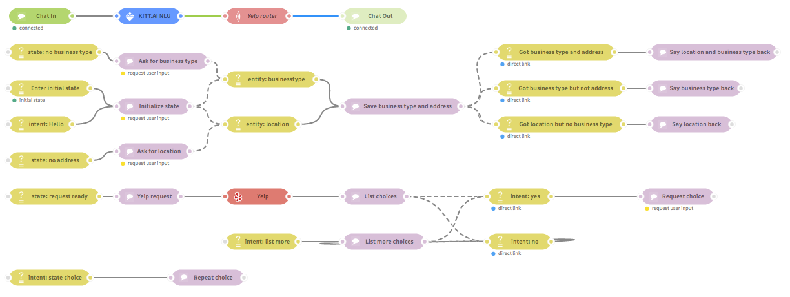
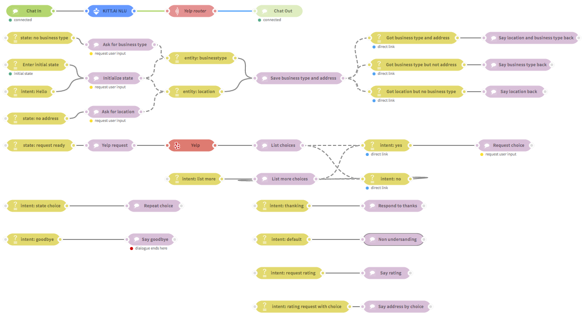
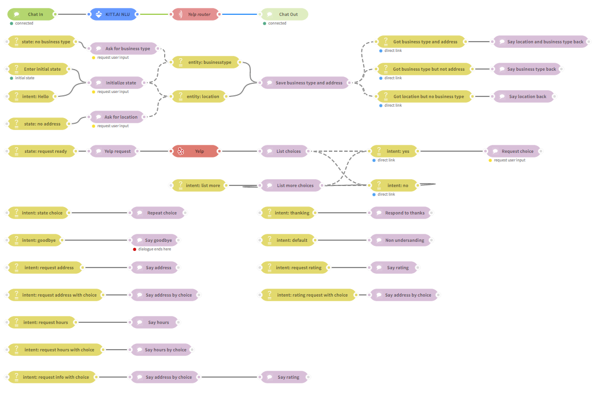

Extended Example: A Conversational Yelp Bot¶
Table of Contents
Introduction¶
In this tutorial, we create a conversational bot that interacts with Yelp API.
Here is an example of the bot in action:
This tutorial walks you through a more advanced bot. The goal of this tutorial is to provide you with a better understand of building more complex and robust bots. In addition, this tutorial will showcase how to configure and integrate a API node into your bot seamlessly.
Note
This project is available in the sample projects section in the create new app dialogue.
Extended Example Walkthrough Video¶
Here is a video walking you through the entire Yelp Bot creation process:
Starting your conversational project¶
1. Create a Project¶
- Create a new app from scratch in ChatFlow.. Double click it in the app list to open the ChatFlow editor.
- Add a router node to the canvas.
- Drag in a Chat In and Chat Out.
2. Create an NLU project¶
- Go to NLU and create a new project.
- Add the following intents:
| intents | Description | Sample Utterances |
|---|---|---|
request_suggestion |
Users asked bot for a suggestion | I’d like a Chinese restaurant in Seattle, I would like to go eat Mexican food in San Francisco, I want Nachos near the Univeristy of Washington |
state_choice |
Users state the choice | The first one, please., The second sounds delicious!, Definitely the third one. |
request_more_options |
User ask for more business choices | Give me more options., Can you look up more options?, I don’t like any of the choices |
request_rating |
User requests for Yelp ratings | What’s the rating?, Are the reivew positive?, How good is the first one? |
request_hours |
User requests for hours of operation | what are the hours?, is the first one open now?, how long is two open for? |
request_address |
User requests for business location | what’s the address?, how far is the first one?, where is number 2? |
info_request |
User asks for more information | what about 2, tell me about option three, what can you tell me about the first one |
agree |
User likes a choice | hello, good morning, how’s it going? |
reject |
User does not like any choices | Yes, Yeah, Sure |
opening |
User greets the bot | No, Nope, None |
thanking |
User thanks the bot | thanks, thank you, much appreciated |
closing |
User ends the conversation | Goodbye, See ya!, Good night |
- Next, click on “set-up entities” and add the following entities:
| entities | Description | Phrases |
|---|---|---|
businesstype |
Type of Restaurant | Tacos, Coffee, Chinese Restaurant |
location |
Location of Search | Seattle, Tokyo, U-district |
enum_choice |
Number Associated with Users Choice | First, 2, Three |
Note
Feel free to add any more intents and entities you may need.
- Once you are finished adding your intents and entities, click deploy and return to your NLU app list.
- Click on the deployment information and copy the Deployment URL.
You can download the example Yelp NLU app and
import to NLU using the import JSON feature.
Note
For more information on creating effective NLU models using the intent and entity paradigm, see NLU documentation.
3. Configuring NLU¶
- Back in Chatflow, drag in an NLU node.
- Connect the Chat In, NLU, Router, and Chat Out Nodes together like below:
Double click in NLU node. Paste the Deployment URL into the URL field. Don’t forget to add
{{{payload}}}to the end of the URL. The final URL will look like this:http://api-nlu.kitt.ai/v1/api/900584f4-7360-479c?token=xxx?q={{{payload}}}
Creating your flow¶
1. Initialization¶
- Start by adding an enter node and a state node.
- Set up the enter node by removing the default entrance condition, and check the box that says Enter Initial state.
- Edit the state node. Name it Initialized state
- Add the following code into the body of the state node:
msg.kitt.address = null; msg.kitt.businesstype = null; msg.kitt.req_pending = false; msg.kitt.user_choice = null; return msg;The
locationvariable keeps the location where Yelp will look for restaurants. Thebusinesstypevariable is the kind of restaurant the agent will look for. Thereq_pendingvariable istrueif we have all the information we need for a Yelp query, but have not yet issued the query. Theuser_choicevariable keeps track of which restaurant the user has chosen.
Tip
This initialization enter-state node flow is a great place to create user defined variables that will appear throughout the entire app!
- In the Output text box, write a welcome message:
- Welcome! I can find restaurants for you in Yelp! What can I help you with?
- Check the request User Input after this node option.
- Connect the enter node and the state node.
- Next add another enter node, name it intent: hello, and set it’s entrnace condition to:
Property msg.NLU.intent == opening
- Finally, connect the intent: hello enter node to the Initialized state state node.
Tip
It is a good idea to have your bot return to its initial state whenever a user says hello.
Your flow should now look like the following figure:
2. Understanding the User’s Request¶
Next, let’s create the parts of the conversational flow that allow the agent to collect information from the user.
- Add another enter node. Name it entity: businesstype, Create a direct link from the state node Initialized State.
Note
To create a direct link, connect the output of the state node to the input of enter node. The connection will be marked by a dash line.
- Edit the entrance condition to be
Property msg.NLU.entities.businesstype is not null.
Note
NLU.entities is a dictionary with the entity types present in the utterance set as the keys and the correspond part of the utterance set as the values. If an entity is not present in an utterance, it will not appear in the NLU.entities dictionary.
- Add one more enter node. Name it entity: location, edit the entrance
condition to be
Property msg.NLU.entities.location is not null. - Create a direct link from the state node Initialized State.
- Next, add a state node to follow the recently created enter nodes. Call it Save business type and address, and add the following code:
if('businesstype' in msg.NLU.entities) { msg.kitt.businesstype = msg.NLU.entities.businesstype; } if('location' in msg.NLU.entities) { msg.kitt.address = msg.NLU.entities.location; } return msg;
Your flow should now look like the following figure:
Information Cases¶
Let’s now add four new enter nodes that handle the cases where the state node above sets:
- both business type and location,
- only business type
- only location
- neither business type nor location
Drag in a new enter node, name it Got Business Type and Address and set the entrance conditions to:
Property msg.kitt.businesstype is not nullProperty msg.kitt.address is not null.
Check the box that says Enter only from direct link.
Additionally, create a direct link with the last state node added.
Note
A direct link connection creates an ordering preference, which ensures that, once pervious state node has been executed, any enter nodes linked to it will be given priority by the router.
- Add state node, connect it to the enter node, and input the following code into the body of the function:
msg.kitt.req_pending = true; return msg;
Add another enter node, name it Got address but not business, and set its conditions to:
Property msg.kitt.businesstype is not nullProperty msg.kitt.address is null
Check Enter only from direct link and create a direct link with the Save business type and address state node.
Add another state node and connect it to enter node and add the following output text:
- Ok, I got {{kitt.address}}, but I didn’t get the restaurant type
Note
To access user variables in output text, use {{kitt.variable}}
where variable is in place of the variable you wish to include.
Add another enter node, name it Got business but not address, and set its conditions to:
Property msg.kitt.address is not nullProperty msg.kitt.businesstype is null
Check Enter only from direct link and create a direct link with the Save business type and address state node.
Add a new state node, connected to the enter nodes, and add the output text:
- Ok, a place in {{kitt.businesstype}}, but I didn’t get the location
Your flow should now look like the following figure:
Collect Missing Information¶
Now we have a network that allows the agent to welcome the user, prompt the user to request a restaurant suggestion, determine whether the agent picked up a location and restaurant type from the user’s request, and give the user feedback.
Now let’s see how we add additional nodes that take care of the situations
where we have either businesstype or location.
Add an enter node, name it state: no address, and set the entrance condition:
Property msg.kitt.address is null
Add a new state node and connect to it a new enter node, name it ask for location, and set the output text:
- What’s the desired location?
Create a direct link from the state node ask for location to the enter node entity: location.
Add another enter node, name it state: no business type and set the entrance condition to:
Property msg.kitt.businesstype is null
Add a new state node, name it ask for business type, and set the output text to:
- What kind of restaurant are you looking for?
Finally, create a direct link from the state node ask for business to the enter node entity: businesstype.
Now the system is ready to accept user requests, and to clarify requests when needed.
Your flow should now look like the following figure:
3. Fulfilling the User’s Request through a Yelp Query¶
Once we have the location and restaurant type, the agent is ready to get a list of restaurant suggestions by issuing a query to Yelp through the Yelp API, which is already conveniently packaged as a ChatFlow node.
- Drag in a Yelp node and double click to edit.
- In the node into put your Consumer key, a Consumer secret, a Token and a Token secret.
Warning
You must provide these values to configure your Yelp node. You can obtain these by signing up for the Yelp developer API.
The Yelp node builds a query by using a term in
msg.yelp.termand a location inmsg.yelp.location.msg.yelp.limitlimits the number of candidates in the output. The result of the Yelp query will be placed in themsg.payload.Tip
For more information about an API nodes input requirements and outputs, check out the info tab!
Add a new enter node, name it state: request ready, set its entrance conditions to the following:
Property msg.kitt.req_pending is true
Connect to this enter node a new state node, name it Yelp request, and add the following code:
// prepare yelp search msg.yelp = {term: msg.kitt.businesstype, location: msg.kitt.address, limit: 10}; // dont request the same search again msg.kitt.reqready = false; return msg;
Connect this state node to the Yelp node.
Your flow should now look like the following figure:
4. Presenting Yelp Results to the User¶
Now the bot can issue queries through the Yelp API. Next, we need to process the
output of the Yelp node (accessible as msg.payload).
Note
For details on how the output is formatted, see the Yelp API documentation.
Our query will produce ten results. Presenting all ten at once would be disastrous in both speech-to-speech and chat scenarios. So let’s present three choices at a time and give the user the option to hear further choices.
- Add a new state node, name it list choices, add the following code to process the Yelp API results:
msg.kitt.yelp_results = msg.payload.businesses; msg.payload = ""; var numresults = 0; if (msg.kitt.yelp_results) { numresults = msg.kitt.yelp_results.length; } if (numresults > 0) { msg.kitt._responses = ['I found ' + numresults + " places that might work. "]; if(numresults > 3) { numresults = 3; msg.kitt._responses[0] += 'The first 3 are:\n'; } for(var i = 1; i <= numresults; i++) { msg.kitt._responses[0] += " " + i + ". " + msg.kitt.yelp_results[i-1].name + "\n"; if (msg.kitt.yelp_results[i-1].image_url) { msg.kitt._responses[0] += msg.kitt.yelp_results[i-1].image_url + "\n"; } } msg.kitt._responses[0] += "Do any of these sound okay?"; } else { msg.kitt._responses = ["Oops I didn't find anything on Yelp. Please update the address and business type. "]; msg.kitt.address = null; msg.kitt.businesstype = null; } return msg;First, we are saving the results in a user variable called
yelp_results. We can access this variable in other nodes asmsg.kitt.yelp_results.Then, we format the bot’s utterance directly in
msg.kitt._responsesby using a loop to add the names of the restaurants to the bot’s utterance.Note
Output text field sets
msg.kitt._responses[0]with the content of the text field.The bot will end with the question: Do any of these sound okay?
From here, we need our bot to extract the user input (affirmative, negative, or a request for more choices) and respond accordingly.
- Add an enter node, name it intent: Yes, set the entrance condition to
Property msg.NLU.intent == accept. - Check Enter only from direct link and create a direct link from the list choices state node.
- Add a new state node, name it request choice, and set the Output text field:
- Great! Which one?
Check the request User Input after this node option.
Next, add a new enter node called intent: No with the entrance condition
Property msg.NLU.intent == reject.Check Enter only from direct link and create a direct link with the list choices enter node.
Add another enter node, name it intent: list more, and add the following two entrance conditions:
Property msg.NLU.intent == request_more_optionsProperty msg.kitt.yelp_results is not null
Add a new state node, name it list more choices, and add the following code:
for(var i = 0; i < 3; i++) { msg.kitt.yelp_results.shift(); } var numresults = msg.kitt.yelp_results.length; if(numresults == 0) { msg.kitt._responses = ["Sorry, I'm all out of options, but you can try a different search request." ]; return msg; } msg.kitt._responses = ['Ok, I have ' + numresults + " more places. "]; if(numresults > 3) { numresults = 3; msg.kitt._responses[0] += 'The next 3 are:\n'; } for(var i = 1; i <= numresults; i++) { msg.kitt._responses[0] += " " + i + ". " + msg.kitt.yelp_results[i-1].name + "\n"; if (msg.kitt.yelp_results[i-1].image_url) { msg.kitt._responses[0] += msg.kitt.yelp_results[i-1].image_url + "\n"; } } msg.kitt._responses[0] += "Do any of these sound okay?" msg.NLU.intent = null; return msg;This code will remove the restaurant options we already used, check if there are still options available, and, if there still are options, present them to the user.
- Connect the intent: list more and intent: No enter nodes to the state node called list more choices.
- Create direct links from list more choices to each of the enter nodes:
- intent: Yes
- intent: No
- intent: list more.
We now have the capability of presenting a small number of choices, and going down a list if necessary.
Your flow should now look like the following figure:
5. Getting a Choice from the User¶
Now we are ready to have the user choose a restaurant from the options presented to them.
- Add a new enter node called intent: state choice with the entrance conditions:
Property msg.NLU.intent == state_choiceProperty msg.kitt.yelp_results is not null.
- Connect to this enter node a new state node.
- Name new state node, name it repeat choice and add the following code:
var choice = null; switch(msg.NLU.entities.enum_choice) { case "first": case "1": case "one": choice = 1; break; case "two": case "2": case "second": choice = 2; break; case "three": case "last": case "3": case "third": choice = 3; break; default: choice = 0; } msg.kitt._responses = [""]; if(choice === 0) { msg.kitt._responses[0] = "Sorry, I didn't get what your choice was. "; } else { msg.kitt.choice_name = msg.kitt.yelp_results[choice-1].name; msg.kitt._responses[0] = "Great, " + msg.kitt.yelp_results[choice-1].name + ". "; msg.kitt.user_choice = "" + (choice - 1); } msg.NLU.intent = null; return msg;In this code, we check for the
NLU.entities.enum_choiceentity and set thechoicevariable appropriately. If a choice is made, we set the user variablekitt.user_choice, which we can access at any time in other nodes.
Your flow should now look like the following figure:
6. Answering user questions about the choices presented¶
Great! Our bot can guide users to a choice, but what if the user has questions about their choice and the other options?
Well, we can creat new flows to answer the users questions!
- Add a new enter node, name it intent: request rating , and add three entrance conditions:
Property msg.NLU.intent == request_ratingProperty msg.kitt.user_choice is not nullProperty msg.NLU.entities.enum_choice is not null
Create a state node called say rating and input the following code:
msg.kitt._responses = ["It's got " + msg.kitt.yelp_results[msg.kitt.user_choice].review_count + " reviews on Yelp, and the rating is " + msg.kitt.yelp_results[msg.kitt.user_choice].rating + " stars."]; msg.NLU.intent = null; return msg;
To handle questions that refer to a specific restaurant, we add a new enter node called intent: rating request with choice with the following entrance conditions:
Property msg.NLU.intent == request_ratingProperty msg.NLU.entities.enum_choice is not null
- Connect this enter node to a new state node called say rating by choice, with the following code:
var choice = null; var status = "open"; switch(msg.NLU.entities.enum_choice) { case "first": case "1": case "one": choice = 1; break; case "two": case "2": case "second": choice = 2; break; case "three": case "last": case "3": case "third": choice = 3; break; default: choice = 0; } msg.kitt._responses = [""]; if(choice === 0) { msg.kitt._responses[0] = "Sorry, I didn't get what your choice was. "; } else { msg.kitt.choice_name = msg.kitt.yelp_results[choice-1].name; msg.kitt.user_choice = "" + (choice - 1); msg.kitt._responses = [msg.kitt.yelp_results[msg.kitt.user_choice].name + " has " + msg.kitt.yelp_results[msg.kitt.user_choice].review_count + "reviews on Yelp, and the rating is " + msg.kitt.yelp_results[msg.kitt.user_choice].rating + "stars."]; } msg.NLU.intent = null; return msg;Here, we have a code that combines the code in Say rating and repeat choice to generate a function that selects an output on the users input.
Tip
You can add similar flows to handle questions about address and hours.
Can we make our bot respond to gratitude? We sure can!
- Add an enter node named intent: thanking with the entrance condition:
Properties msg.NLU.intent == thanking
- Add a state named respond to thanks, add the following code:
msg.kitt._responses = ['No problem. ', 'Sure, any time. ', 'Glad to help. ', 'Any time. '] msg.NLU.intent = null; return msg;This code stores a set of appropriate responses and randomly selects one to output!
Well, what if our bot does not understand our user? We can create a flow to handle that!
- Add an enter node named intent: default with the entrance condition:
Properties msg.NLU.intent is not null
- Add a state named Non understanding and add the following code:
msg.kitt._responses = [ "Sorry, I didn't get what you said. ", "Oops, I'm not sure I understand. ", "Hmm, not sure I understand. "]; if (msg.kitt.address !== null && msg.kitt.businesstype !== null) { var str = "I should point out that I'm not good at understanding the names of businesses, so when I give you choices, just say first, second, or one, two, and so on. "; for(var i = 0; i < msg.kitt._responses.length; i++) { msg.kitt._responses[i] += str; } } else if (msg.kitt.address === null && msg.kitt.businesstype !== null) { var str = "Zip code might be easier for me. Or try something easy. "; for(var i = 0; i < msg.kitt._responses.length; i++) { msg.kitt._responses[i] += str; } } else if (msg.kitt.businesstype === null) { var str = "I'm not good at business types at this point. Please try something simple. "; for(var i = 0; i < msg.kitt._responses.length; i++) { msg.kitt._responses[i] += str; } } msg.NLU.intent = null; return msg;Note
This outcome is mostly likely a results from an NLU error. Although it is crucially important to make sure the NLU performs adequately, it is also important to understand that the NLU will make mistakes. Make sure your flow can account for those mistakes.
Finally, we can create a flow that will end our dialogue with our user.
- Add an enter node named closing with the entrance condition:
Properties msg.NLU.intent == goodbye
- Add a state named good bye, add the output text Goodbye check the Dialogue ends here box.
Your flow should now look like the following figure:
Final Thoughts¶
That’s it! We now have a fully functional conversational interface to Yelp. Can you make it better? (Of course you can!)
In addition, you can import and play with the application by either:
- Downloading the
JSONfile for our application and importing the project on the applications page- Creating a new project form the “Yelp Bot” sample application under “Use a Sample Project” on the applications page.
Happy Bot Building!